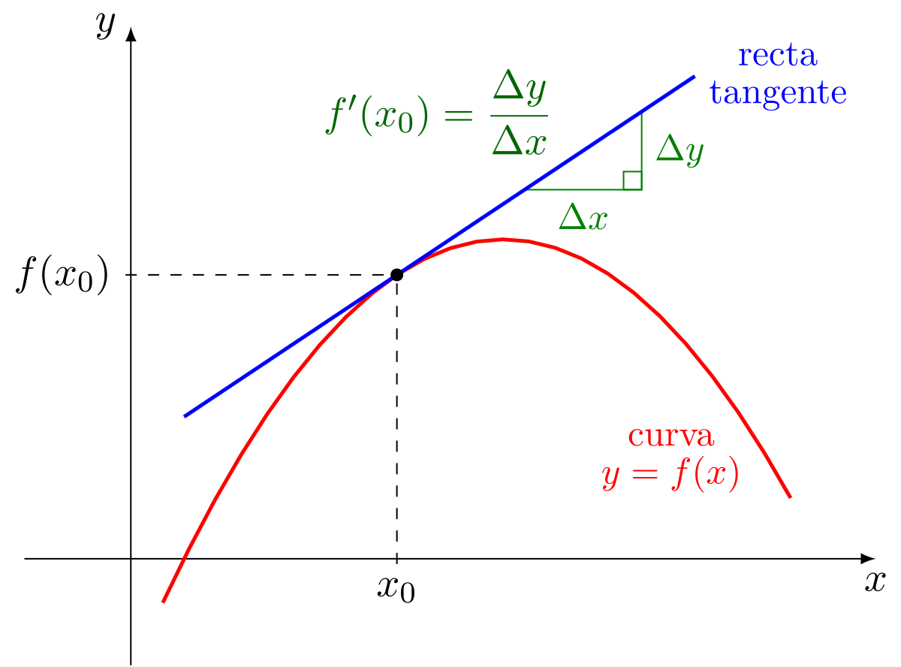
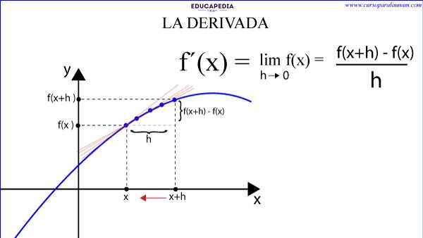

La Derivada es un elemento utilizado en la matemática para calcular respuestas de una función a la que se le están alterando sus valores iniciales. La derivada de una función esta representada gráficamente como una línea recta superpuesta sobre cualquier curva (función), el valor de esta pendiente respecto al eje sobre el cual esta siendo estudiada la función recibe el nombre de Derivada. Las derivadas trigonométricas son importantes en el cálculo diferencial, ya que nos permiten determinar cómo varía la función trigonométrica en un punto dado. A continuación, se describen las principales derivadas trigonométricas
 
La derivada de la función seno es el coseno y la derivada de la función coseno es el seno negativo.
La derivada del coseno de una función es igual al seno de dicha función, multiplicado por la derivada de la misma y por menos 1, es decir, se cambia del signo positivo al negativo o viceversa.
“La derivada de la tangente es igual a la unidad partida por el cuadrado del coseno”. O bien: “es igual a la unidad más el cuadrado de la tangente”.
La derivada de la cotangente de una función f(x) es igual a la cosecante de dicha función elevada al cuadrado, multiplicada por la derivada de la f(x), y multiplicada además por -1.
La derivada de la secante de una función es igual a la secante de la función por la tangente de la función, y por la derivada de la función.
La cosecante de un ángulo es definida usando a un triángulo rectángulo. La cosecante de un ángulo es igual a la longitud de la hipotenusa dividida por la longitud del lado opuesto al ángulo en el triángulo. Es decir, es la razón inversa del seno del ángulo.
La derivada de la función seno inversa es igual a 1 sobre la raíz cuadrada de 1 menos x al cuadrado, 1/(√(1-x2)). Esta derivada puede ser demostrada usando el teorema de Pitágoras y el álgebra. En este artículo, conoceremos cómo derivar la función seno inverso. Veremos una demostración, una comparación gráfica de la función no derivada y derivada
La derivada de la función coseno inversa es igual a menos 1 sobre la raíz cuadrada de 1 menos x al cuadrado, -1/(√(1-x2)). Esta derivada se puede demostrar usando el teorema de Pitágoras y el álgebra.
La derivada de la función tangente inversa es igual a 1/(1+x2). Esta derivada se puede demostrar usando el teorema de Pitágoras y el álgebra.
La derivada de la función secante inversa es igual a 1/(|x|√(x2-1)). Podemos demostrar esta derivada usando el teorema de Pitágoras y el álgebra.